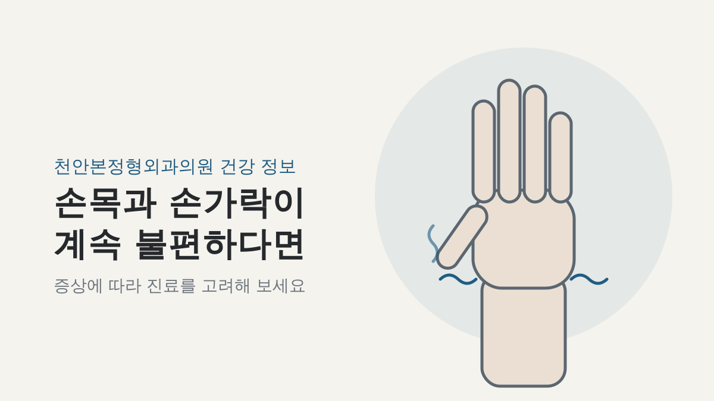
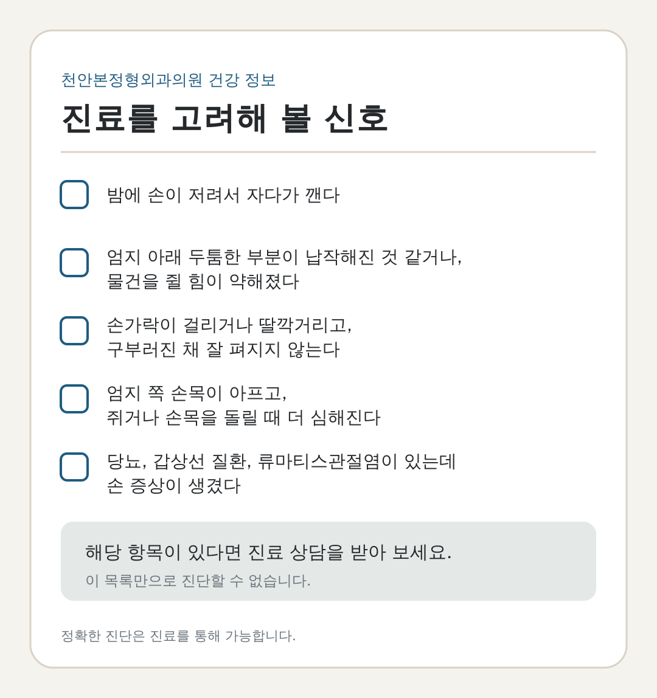
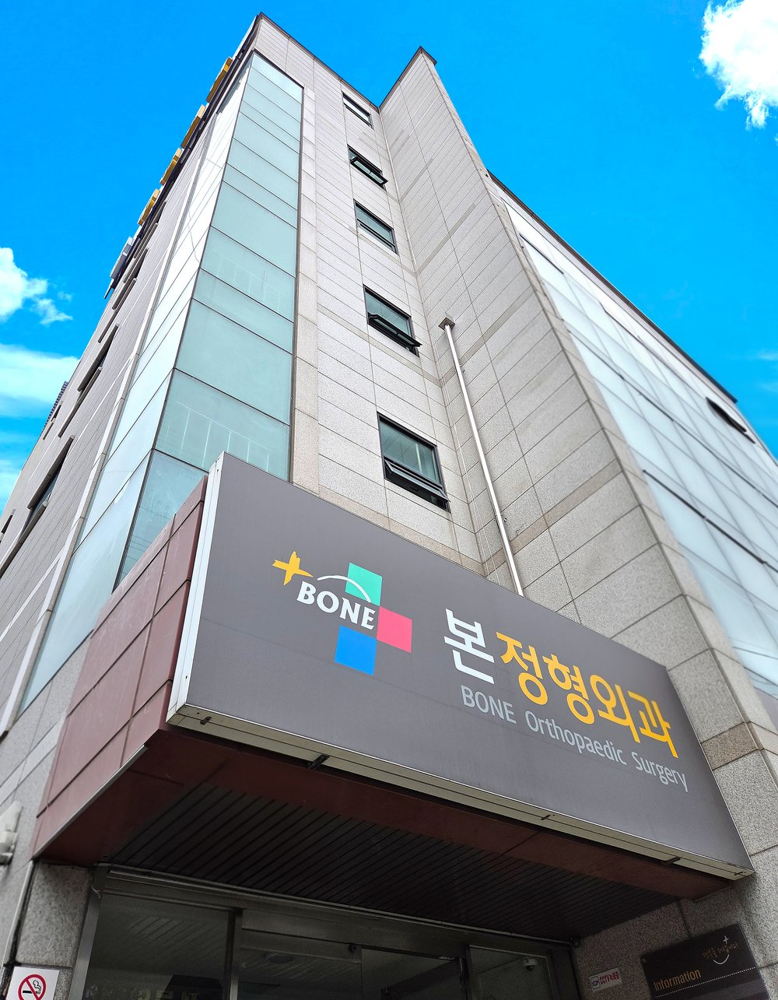

김장철이 지나고 나서 손목이 뻐근하거나 손가락이 저린 적이 있으신가요? "그냥 며칠 힘들어서 그런가?" 하고 넘기다가도, 증상이 계속되면 걱정이 되실 수 있어요.
손목과 손가락의 저림, 통증에는 여러 원인이 있습니다. 이 글은 원인을 하나로 단정하지 않고, 어떤 증상이 있을 때 진료를 고려하면 좋을지 차분히 안내해 드리려고 합니다.
손목과 손가락이 저리고 아플 때 생각해 볼 수 있는 상태
손을 많이 쓴 뒤 불편을 느끼는 경우, 일반적으로 아래와 같은 상태가 알려져 있습니다. 다만 증상만으로 스스로 구분하기는 어렵습니다.
| 상태 | 알려진 특징 |
|---|---|
| 손목터널증후군(수근관증후군) | 손목에서 정중신경이 눌려 생기며, 엄지부터 넷째 손가락 쪽의 저림이 특징입니다. 새끼손가락에는 보통 증상이 없다고 알려져 있습니다. |
| 방아쇠수지 | 손가락을 굽히는 힘줄과 그 통로에 염증이 생겨, 손가락을 펼 때 걸리거나 딸깍거리는 느낌이 나타날 수 있습니다. 아침에 뻣뻣하다가 시간이 지나 풀리기도 합니다. |
| 드퀘르뱅병(손목 건초염) | 엄지 쪽 손목의 힘줄이 붓고 아픈 상태로, 물건을 쥐거나 손목을 돌릴 때 심해질 수 있습니다. |
특정 작업이 이 질환들의 원인이라고 확정할 수 있는 것은 아니며, 정확한 원인은 개인마다 다를 수 있습니다.
이런 증상이 있다면 병원 방문을 고려해 보세요
아래 항목은 진료 상담을 고려할 때 참고하실 수 있는 예시이며, 이 목록만으로 진단할 수는 없습니다.
- 밤에 손이 저려서 자다가 깬다
- 엄지 아래 두툼한 부분이 납작해진 것 같거나, 물건을 쥘 힘이 약해졌다
- 손가락이 걸리거나 딸깍거리고, 구부러진 채 잘 펴지지 않는다
- 엄지 쪽 손목이 아프고, 쥐거나 손목을 돌릴 때 더 심해진다
- 당뇨, 갑상선 질환, 류마티스관절염이 있는데 손 증상이 생겼다
증상이 갑자기 심해지거나 걱정되신다면, 진료 상담을 받아 보세요.

병원에서는 어떻게 확인하나요
위 신호에 해당해 병원을 찾으시면, 보통 아래와 같은 과정으로 살펴봅니다. 정형외과에서 상담받으실 수 있으며, 손 질환(수부) 진료 가능 여부는 병원마다 다를 수 있습니다.
- 문진: 언제부터, 어느 손가락이, 밤에도 불편한지 등을 여쭙니다.
- 신체검진: 손목과 손가락을 눌러 보거나 특정 자세를 취해 보며 상태를 확인합니다. 손목터널증후군에서는 팔렌 검사와 틴넬 징후, 드퀘르뱅병에서는 핀켈슈타인 검사 같은 방법이 알려져 있습니다.
- 추가 검사: 필요하다고 판단되면 초음파나 신경전도검사 등을 고려할 수 있으며, 검사 종류는 병원마다 다를 수 있습니다.
손목터널증후군은 검사 결과가 정상일 수 있어, 한 가지 검사보다 여러 소견을 종합해 판단한다고 알려져 있습니다.
진료 때 아래 내용을 정리해 가시면 도움이 됩니다.
- 증상이 시작된 시기와 불편한 손가락
- 밤에 증상이 심해지는지 여부
- 복용 중인 약과 당뇨 등 기저질환
치료는 어떤 순서로 고려하나요
치료는 증상과 검사 결과에 따라 달라집니다. 일반적으로는 아래 순서로 고려하는 것으로 알려져 있습니다.
- 휴식과 손 사용 조절
- 보조기(부목) 사용, 소염진통제 등 약물
- 필요한 경우 주사 치료
- 보존적 치료로 호전이 없거나 진행된 경우 수술
주사 치료는 선택지 중 하나이며, 효과의 지속 정도가 개인과 상태에 따라 다를 수 있습니다. 약물과 주사를 포함한 모든 치료에는 이점과 위험이 함께 있어, 개인의 상태에 맞는지는 의료진과 충분히 상의해서 결정하세요.
진료 전 일상에서 유의할 점
증상이 있는 동안에는 불편을 키우는 것 같은 동작을 잠시 줄이고, 손과 손목을 무리해서 쓰지 않도록 해 주세요. 증상이 이어진다면 혼자 참기보다 진료를 받아 보시길 권합니다.
천안에서 진료를 알아보신다면
천안에서 손목 통증으로 진료를 알아보고 계신다면 천안본정형외과의원에 문의하실 수 있습니다. 부담 갖지 마시고, 위에 적은 증상이 해당되는지 편하게 상담해 보세요.
- 주소: 충남 천안시 서북구 불당대로 272 (쌍용동 220-42)
- 전화: 041-575-6000
- 진료시간: 월·화·수·금 09:00-18:00 (점심 13:00-14:00), 목요일 09:00-13:00, 토요일 09:00-12:00, 일요일·공휴일 휴진
- 진료 안내: 관절센터(무릎, 고관절, 어깨, 수부, 발목), 척추통증 클리닉
- 상담: 전화 또는 카카오톡 상담

정확한 진단은 진료를 통해 가능합니다. 증상이 지속되면 전문의 상담을 받으세요.
이 글은 일반적인 건강 정보 제공이 목적이며 개인의 진단과 치료를 대신하지 않습니다. 증상과 치료 방법은 개인별로 다를 수 있습니다.